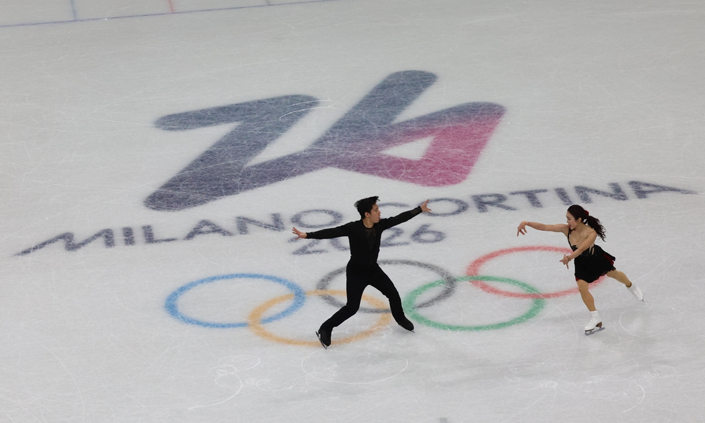

Figure skating is a sport in which individuals, pairs, or groups perform on figure skates on ice. It was the first winter sport to be included in the Olympic Games, with its introduction occurring at the 1908 Olympics in London. The Olympic disciplines are men's singles, women's singles, pair skating, and ice dance; the four individual disciplines are also combined into a team event, which was first included in the Winter Olympics in 2014.
